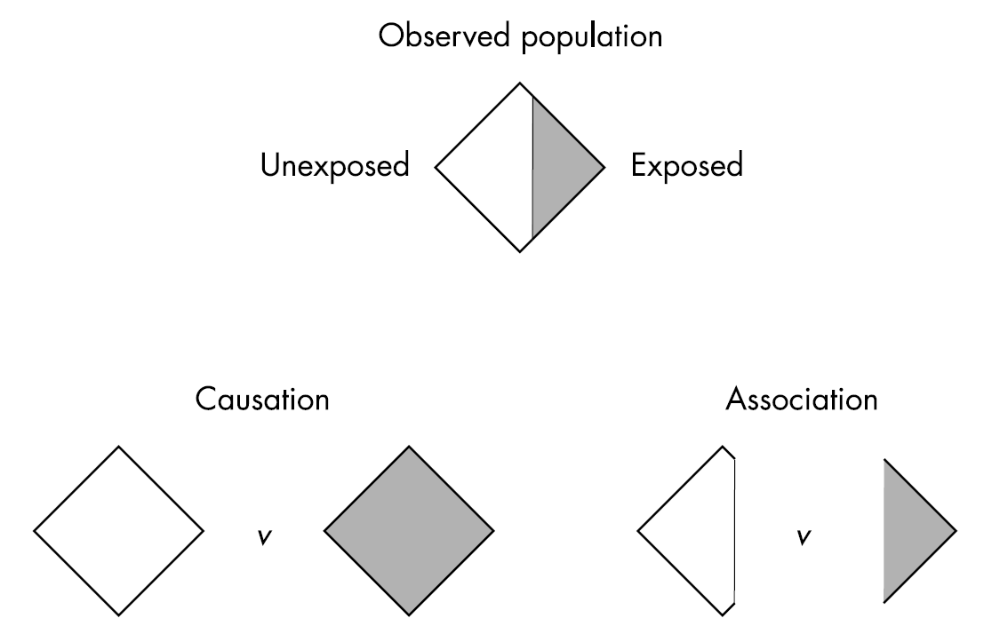
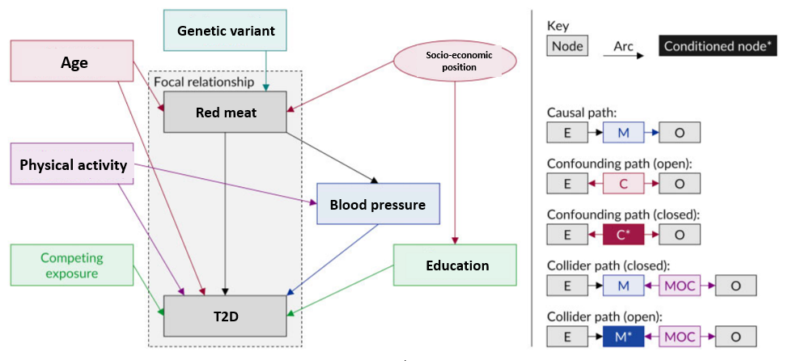

n <- 1e6
w <- rnorm(n)
a <- rbinom(n, 1, 0.5)
y <- rnorm(n, w + a)Introduction to causal mediation analysis
What is a cause?
In a way this can be very intuitive. If I press the switch, the light will come on. We use causal reasoning all the time. If I do A, then Y will happen. Some relationships, we can define them to be deterministic. Doing A will always lead to Y.
Notation
A = received treatment/intervention/exposure (e.g., 1 = intervention, 0 = no intervention)
Y = observed outcome (e.g., 1 = developed the outcome, 0 = no outcome)
\(Y^{a=1}\) = Counterfactual outcome under treatment a (i.e., the outcome had everyone, counter to the fact, recieved treatment a = 1)
\(Y^{a=0}\) = Counterfactual outcome under treatment a (i.e., the outcome had everyone, counter to the fact, recieved treatment a = 0)
Individual causal effect
When investigating health outcomes, we would ideally want to know if you do X, then Y will happen. We could have a specific question:
Will eating more red meat give me higher blood glucose in 1 year?
To answer this question we would ideally have you consume more red meat over 1 year and measure your blood glucose levels. Then, we would turn back time, and make you eat something else over 1 year and then measure your blood glucose levels again. If there is a difference between your two outcomes, then we say there is a causal effect.
But we can never do this in the real world.
Average causal effect
Instead, we can perform a randomized controlled trial. We now ask a slightly different question:
Will eating more red meat give adults higher blood glucose in 1 year?
We can randomely assigning one group to consume more red meat and the other group to consume more of something else over 1 year. Then we compare the average blood glucose levels after 1 year in each of the groups. If there is a difference, we could say there is a causal effect.
Notation
We now modify the terms a little.
\(E[Y^{a=1}]\) the average counterfactual outcome, had all subjects in the population received treatment a = 1.
\(Pr[Y^{a=1}]\) the proportion of subjects that would have developed the outcome Y had all subjects in the population of interest received treatment a = 1.
What we estimate here is the average causal effect.
Definition of a causal effect
More formally we can now define a causal effect (ref:Hernan2004):
\(E[Y^{a=1} = 1] - E[Y^{a=0} = 1] \ne 0\)
Code example: estimating causal effect
To get an idea of what is going on, we will simulate a simple dataset with an outcome Y, treatment A and a confounder W.
Then, we will run a linear regression model for the effect of the treatment on the outcome, adjusting for confounder w.
lm_y <- lm(y ~ a + w)We now use this model to predict the outcome, if, all had received treatment = 1 and another prediction of the outcome had not received treatment (A = 0).
pred_y1 <- predict(lm_y, newdata = data.frame(a = 1, w = w))
pred_y0 <- predict(lm_y, newdata = data.frame(a = 0, w = w))We can now get the causal effect, which is the average of the difference in the treatment effect in each group. Or put more formally E[Y^{a=1} = 1] - E[Y^{a=0} = 1]
mean(pred_y1 - pred_y0)[1] 0.9989805Association vs causation
What makes it complicated to estimate a causal effect is that we cannot observe the outcome under different treatments. When we only have a subset of the outcomes, we have an association. This is illustrated in Fig. 1.

If we want to infer a causal effect, we need three assumptions to be fulfilled:
- Exchangeability
- Consistency
- Positivity
Exchangeability
The risk of the outcome in A = 1 would have been the same as the risk of the outcome in A = 0, had those in A = 1 received A = 0.
Think about a randomized trial where you, by mistake, give the intervention to the other group. The effect should be the same as the one you would have observed had the groups been correct.
We can also have conditional exchangeability. The risk is similar in subsets of the population. That could be within the levels of a variable L (e.g., education).
Consistency
The treatments under comparison are well-defined and correspond to the versions of treatment observed in the data:
- Precise definition of \(Y^a\) via a
- Link counterfactual outcomes with observed outcomes
\(Y^a = Y\) for every individual with A = a.
The observed outcome for all treated equals the outcome if they had received the treatment.
Positivity
The probability of receiving every value of treatment conditional on L is greater than zero. In other words, there must be a probability of being assigned to each treatment level.
Think, if we don’t have anyone with A = 0 among those with L=1 (e.g. long education), then we cannot estimate the conditional probability of the outcome.
A randomized controlled trial
In a randomized controlled trial these assumptions are often fulfilled given that the randomization is successful (i.e., have exchangeability and large enough groups), the treatment is clearly defined (consistency) and by design all have the possibility to be in either group (positivity).
These assumptions are much harder, let alone impossible, to verify in an observational study. That is why causation is more challenging in observational studies.
Importance of good research questions
When we talk about causal effects, we often ask “what if”-questions and we can think of them in the context of a randomized controlled trial.
A formal extension of this notion is the target trial framework. Here, one first specify the target trial, or referred to as the hypothetical interventions that one would have wanted to perform, to address a specific research question.
Directed Acyclic Graphs
Another method to graphically display your research question and your assumptions about your data is by using directed acyclic graphs (DAGs). DAGs are a simple and transparent way to identify and illustrate your assumptions about the causal relationships between variables in your dataset.
A DAG contains nodes and arrows. It cannot be circular. Fig. 2 shows the different types of variables in a DAG and rules for paths (ref:Tennant2021).

Causal mediation analysis
Causal mediation analyses help you establish whether treatment causes the outcome because it causes the mediator. To do this, causal mediation seek to understand how the paths behave under circumstances different from the observed circumstances (e.g., interventions).
Causal mediation analysis is an extension of the traditional approach by first and foremost making the effect we are investigating clear.
Making assumptions explicit
By using DAGs, the assumptions about confounding are made much more explicit.

In Fig 3. we can see that we not only have to take confounding between the treatment and outcome into account, but we also have to take mediator-outcome (\(A \leftarrow W \rightarrow Y\)) confounding into account.
Randomized controlled trials
Note, even if you have a randomized controlled trial, you can have mediator-outcome confounding. This is because the mediator has not been randomized.
Consequently, mediation analysis in randomized controlled trials also need to do adjustment of potential confounders and residual confounding cannot be ruled out.
In addition, we can have a more complicated situation where the treatment also impacts another mediator that is also a mediator-outcome confounder. This is illustrated in Fig. 4.

From the DAG rules, we have a special problem that we cannot solve with traditional regression approaches. If we adjust for Z we open the backdoor path from \(Z \leftarrow W \rightarrow Y\). We will work on how to solve this problem later in the course.
Taking interaction and non-linearity into account
Neither the product method nor the difference method can take interaction and non-linearity into account.
The causal inference analysis methods are different from the traditional regression approach in that:
- it builds a causal model. This model can include non-linearity and interactions
- then artificially manipulate the data to set the treatment and the mediator to certain values
- then predict the outcome using the causal model and contrast the outcomes
Effect decomposition
Using the causal inference framework allow for effect decomposition, even when there are interaction and non-linearity.
Effect decomposition is important when we want to assess relative contributions such as the proportion mediated and eliminated.
Defining effects
Imagine we have a hypothetical randomized controlled trial where we give participants treatment or no treatment on a specific outcome Y.
\(Y^a=1 - Y^a=0\)
We are also interested in the effect of a mediator on this pathway, so we also intervene on the mediator in a new hypothetical randomized controlled trial.
\(Y^m=1 - Y^m=0\)
Now consider if we could, in the same trial, could intervene on both because we are interested in whether treatment causes the outcome because it causes the mediator.
Notation
\(Y^a\) = a subject’s outcome if treatment A were set, possible contrary to fact, to a
\(M^a\) = a subject’s value of the mediator if the exposure A were set to the value of a
\(Y^{a,m}\) = a subject’s outcome if A were set to a and M were set to m
\(Y^{a,M_a}\) = a subject’s outcome if A were set to a and M were set the value m would have had a been set to a. Note, this is a nested counterfactual
We can now define these effects:
- the controlled direct effect (CDE)
- natural direct effect (NDE)
- natural indirect effect (NIE)
Controlled direct effect
The effect of A on Y not mediated through M. Fixing the value of M to m.
\(Y^{a=1,m}\) - \(Y^{a=0,m}\)
We intervene on a but fix m to a certain value. The CDE is how much the outcome would change on average if the mediator were fixed at level m uniformly in the population but the treatment were changed from 0 to 1.
This could be relevant in the context of a change in a policy that impacted the mediator for everyone. For instance, if air pollution was a mediator between physical activity and cardiovascular disease risk. If a new policy would change the level of air pollution for all while we implement an intervention to increase biking in the city.
This effect is not used that often. But can be relevant in some situations.
Natural direct effect
The effect that would remain, if we were to disable the pathway from exposure to mediator.
\(Y^{a=1,M_a=0}\) - \(Y^{a=0,M_a=0}\)
The NDE is how much the outcome would change if the exposure was set at a = 1 versus a* = 0 but for each individual the mediator was kept at the level it would have taken, for that individual, in the absence of the exposure.
Natural indirect effect
The effect of the mediator pathway.
\(Y^{a=1,M_a=1}\) - \(Y^{a=1,M_a=0}\)
The NIE is how much the outcome would change on average if the exposure were fixed at level a = 1 but the mediator were changed from the level it would take if a* = 0 to the level it would take if a = 1.
Note that exposure has to have an effect on M otherwise this will be zero.
Study designs for causal mediation analysis
Mediation analysis can be used in both intervention and observational studies.
A key assumption is that the exposure should be before the mediator and the mediator and exposure before the outcome. It is possible by design to have these three variables measured at different time points. In practice, this is rarely the case. Probably because the study was not designed to conduct mediation analysis.
Exercise: Understanding different study designs (30 min)
You will now be placed in different groups and read selected sections of different mediation analyses within different study designs. You have 15 min to complete the task. Then, each group will briefly present their paper, the approach used and what they thought about it.
Group 1: Intervention study a
Paper: Shoer et al. 2023
- read the abstract
- read section ‘Mediation analysis’ under ‘Methods’
- read section ‘The microbiome mediates the diet’s effect’ under ‘Results’
- try to understand Fig. 4.
Task: explain the overall study and the mediation analysis. What does the results imply?
Group 2: Intervention study b
Paper: Johansen et al. 2020
- read the abstract
- read from “Single mediation analysis” under ‘Statistical analysis’
- try to understand table 4
- read from “To explore the role of weight loss in relation to beta cell function we performed single mediation analysis” under ‘Discussion’
Task: explain the overall study and the mediation analysis. What does the results imply? How did the authors interpret the results? How do you interpret the results?
Group 3: Cohort study
Paper: Wang et al. 2022
- read the abstract
- read from “To test whether an association between the metabolite profile score and risk of type 2 diabetes…” under ‘Statistical analysis’
- try to understand Fig. 4
- read the conclusion
Task: explain the overall study and the mediation analysis. What does the results imply? How did the authors interpret the results? How do you interpret the results?
Group 4: Cross-sectional study
Paper: Shi et al. 2022
- read the abstract
- they used a specific algorithm to identify mediation. You do not have to understand how it works. Simply note whether they adjusted for specific variables in their analysis (Hint: look in the methods section)
- Read section ‘Mediation by the gut microbial species Dialister invisus’ under ‘Results’
Task: explain the overall study design, what exposure, mediator and outcomes were they interested in? Are their results causal?
Two trials
It is possible to conduct two randomized controlled trials to investigate mediation (ref:Imai). One approach is the so-called parallel design. Two randomized controlled trials are conducted in parallel. The first investigates the effect of the treatment on the outcome (i.e., total effect). In the second trial we randomize both the treatment and the mediator.
For example, one could use transcranial magnetic stimulation (TMS) to investigate if activation of specific brain regions mediate the propensity to accept more unfair monetary offers in a bidding game called the “ultimatum game) (ref: Knoch 2006). First you conduct an experiment with unfair bidding and acceptance. Then one conducts the same experiment but with manipulation of the mediator, here TMS to activate a certain brain region.
A key assumption here is consistency. The subjects should not know the receive the extra intervention.
There is also a crossover version (ref: Imai). Here, we first randomize the order of the treatment and control, then observe the effect on mediator and outcome. Then we assign the opposite treatment status and to the value of the mediator that was observed in the first period.
In addition to consistency there is the assumption of no carry-over effects.
Group work
- exercise with traditional methods
- discussion about limitations
- show example from a paper and discuss what they think